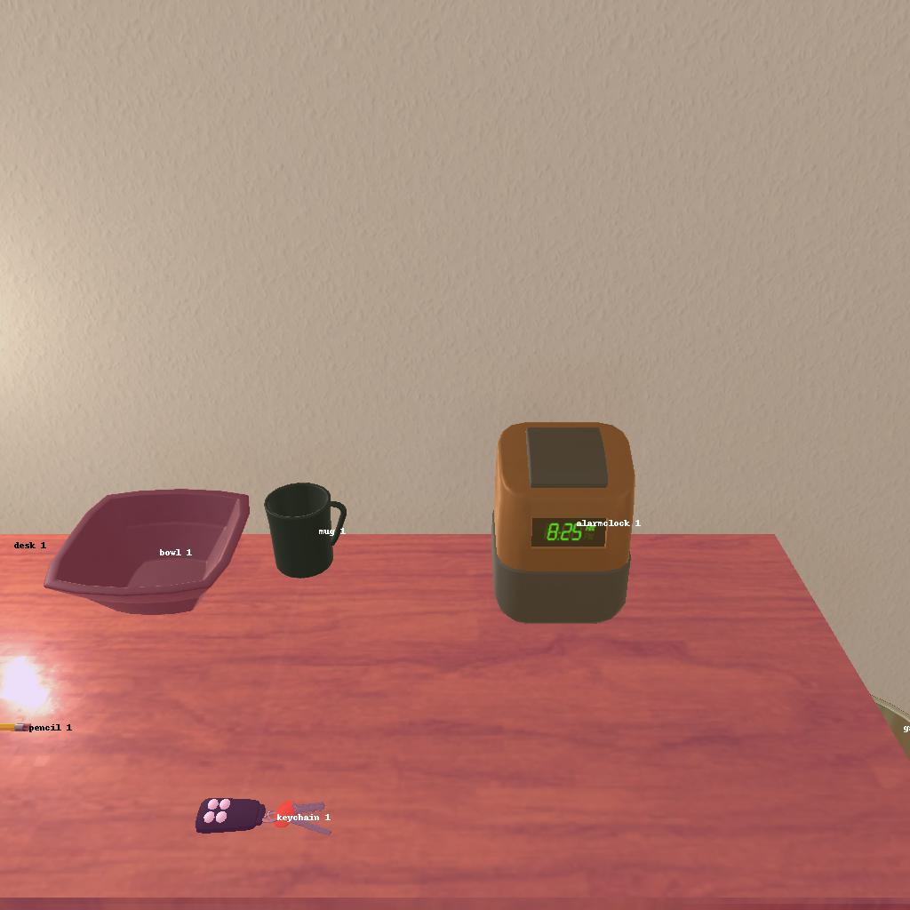

---------------------------------------------------------task: 6---------------------------------------------------------
--------------------------------------------------------------------------------------------------------------------------------------------------------------------
--------------------------------------------------------------------------------------------------------------------------------------------------------------------
Step:--------------------------------------------------------------------------1-------------------------------------------------------------------------------
----------------------------------------
VLM Prompt:
Image1:
**Instruction**
1. Analyze the provided image to identify all visible household objects, focusing on those relevant to the task description "put a cd in safe."
2. Use the analysis of the image and the task hint "The agent must find an object of the desired type, pick it up, find the correct location to place it, and put it down there." to answer the question: what is the most reasonable action in the choices for the task description "put a cd in safe"?
4. Decide and write the answer using the template: The answer is: (i): , where i is the real number. If there is no desired object in the image, search every place based on **Initial Observation** to find the object. And if no one is exactly correct, choose a similar answer.
**Initial Observation**
You are in the middle of a room. Looking quickly around you, you can see bed (1-2), dresser (1), sidetable (1-2), drawer (1-11), desk (1), garbagecan (1), safe (1)
**Answer Choices**
(1): go to bed 1
(2): go to dresser 1
(3): go to bed 2
(4): go to sidetable 1
(5): go to drawer 1
(6): go to drawer 2
(7): go to sidetable 2
(8): go to drawer 3
(9): go to drawer 4
(10): go to garbagecan 1
(11): go to drawer 5
(12): go to drawer 6
(13): go to drawer 7
(14): go to drawer 8
(15): go to drawer 9
(16): go to drawer 10
(17): go to drawer 11
(18): go to safe 1
(19): take alarmclock 1 from desk 1
(20): take bowl 1 from desk 1
(21): take mug 1 from desk 1
(22): take keychain 1 from desk 1
(23): take pencil 1 from desk 1
(24): examine desk 1
**Answer**
Let's think step by step by following the instructions.
----------------------------------------
----------------------------------------
Original Response:
First, we analyze the image to identify visible household objects. We can see a desk labeled "desk 1" with several items on it, including a bowl labeled "bowl 1," a mug labeled "mug 1," an alarm clock labeled "alarmclock 1," a keychain labeled "keychain 1," and a pencil labeled "pencil 1." There is no CD visible in the image.
Now, using the task hint, we know we need to find an object of the desired type, which is a CD. Since there is no CD on the desk, we must search every place based on the Initial Observation to find one.
Considering the usual places where a CD might be found, it's less likely to be in places like the bed, garbage can, or bowl. Dressers, side tables, and drawers are more common places where one might keep a CD.
Therefore, the most reasonable action would be to check the drawers first. Since there are multiple drawers, we can start from the first one and continue until we find a CD.
The answer is: (5): go to drawer 1. If the CD is not there, we would continue with the subsequent drawers.
----------------------------------------
----------------------------------------
>>> Refine Original VLM Response and Get Pure Action: go to drawer 1
----------------------------------------
-----------------------------------------------------------------
Running time: 10.225930452346802 seconds
Total Money: 1.6390600000000004
-----------------------------------------------------------------
-----------------------------------------------------------------
Text Observation:You arrive at loc 4. The drawer 1 is closed.
-----------------------------------------------------------------
UNSUCCEED